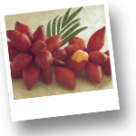
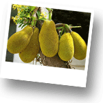

Фрукты Тайланда
Всем известно, что фрукты содержат в себе огромное количество витаминов и полезных микроэлементов. В Тайланде огромное количество фруктов, которые продаются круглый год – цена на них колеблется от 30 до 150 Бат за килограмм в зависимости от сезона.

КАРАМБОЛЬ (Ма Фуанг)
Плоды похожи на большой болгарский перец, но в разрезе напоминают форму звезды. Бывают желтого цвета. Очень сочный фрукт, слегка терпкий и вязкий на вкус. Удобно есть нарезанным так же на ломтики.
ЛОНГКОН (Лам йай)
Коричневые плоды на веточках. Кожура хрустящая. Внутри находится белая, почти прозрачная мякоть на большой темной косточке. Плоды должны быть именно коричневыми и кожура должна легко сниматься.
ФРУКТ ДРАКОНА (Гео Мангон)
Яркий фрукт красно-розового цвета, размером с небольшое яблоко, но вытянутой формы. Внутри белая сочная мякоть со множеством хрустящих черных косточек. По вкусу слегка напоминает киви. Плод нужно разрезать пополам и после этого удобно есть его ложкой. Также можно нарезать плод дольками и есть его, как апельсин.
РАМБУТАНЫ (Нго)
Фрукты красноватого цвета размером со сливу. Снаружи на кожуре мягкие шипы. В пищу употребляется только мякоть, которая очень сочная белого цвета. Внутри мякоти косточка, которая несъедобна. Вкус очень приятный освежающий, напоминает виноград.При покупке обязательно выбирайте самые яркие и твердые плоды рамбутана. Их нужно резать пополам или разрывать кожуру руками.
ЛИНЧИ (Личи)
Фрукт красного цвета размером с небольшую сливу. Продается гроздями. Кожура достаточно легко снимается и в пищу употребляется сочная, почти прозрачная мякоть. Внутри фрукта есть черная косточка, она не съедобна.
ДУРИАН (Туриан)
Считается тайским Королем фруктов. Очень питательный и полезный. Знаменит своим специфическим запахом. Размер дуриана колеблется от размера маленькой дыни до большого арбуза. Фрукт обладает твердой и колючей кожурой с острыми шипами-пирамидками. Открыть самим дуриант очень сложно. Поэтому на рынке лучше попросить, чтобы Вам его открыли и максимально быстро его съесть, потому что потом у фрукта появляется очень устойчивы специфический запах. Именно из-за того, что дуриан обладает этим запахом его нельзя проносить в отели и другие общественные места. Считается, что дуриан нельзя сочетать с алкоголем.
ПАПАЙЯ (Малако)
Очень полезный и богатый витаминами фрукт. Имеет вытянутую форму. Зрелая папайя зелено-оранжевого цвета. Кожура легко срезается ножом, потом фрукт режут в длину пополам. В середине есть полость со множеством черных косточек, которые не едят.
АНАНАС (Саппарот)
Известный фрукт и не нуждается в описани. Но следует отметить, что тайский ананас очень отличается. Он очень сочный, очень сладкий, очень вкусный.
МАНГУСТИН (Манг Кут)
Небольшой фрукт темно-фиолетового цвета и круглой формы. У него очень толстая кожура под которой нежная и очень сочная мякоть, напоминающая по форме зубчики чеснока. Очищать можно при помощи ножа или руками. Чистится фрукт очень непросто, но его восхитетельная по вкусу мякоть стоит ваших усилий.
ТАЙСКОЕ ЯБЛОКО (Шам Пу)
Этот фрукт по форме напоминат=ет колокол. Бывает зеленого или розового цвета. Очень сочный, но почти безвкусный. Чистить его не нужно. Достаточно просто помыть.
ПАМЕЛО (Сом О)
Фрукт зеленого цвета, размером с небольшую круглую дыню. По вкусу очень похож на грейпфрукт. Очень вкусный, сочный и сладкий. Удобнее всего покупать памело в очищенном виде, потому что чистить самостоятельно довольно сложно.

САЛА (Сала)
Чешуйчатые плоды темно-коричневого цвета, размером с маленькую вытянутую луковицу. Открывается достаточно просто. Различают два сорта – кислый и сладкий. Как правило, сладкий вполовину дороже кислого.
МАНГО (Мамуон)
Фрукт овальной формы. Ярко желто-оранжевая кожура легко срезается ножом. Мякоть очень сладкая и сочная. Один из самых вкусных фруктов Тайланда.
ТАМАРИНД (Ма Камван)
Напоминает стручки фасоли, но более круглые и крупные, коричневого цвета. Снаружи хрустящая кожура, которая несъедобна, а внутри находятся коричневые плоды по вкусу похожие на изюм (сушеный виноград). Из тамаринда часто делают очень сладкий напиток.

ДЖЕК ФРУКТ (Кануун)
Очень питательный и вкусный фрукт. Его вес может достигать 20 килограммов. Снаружи покрыт зеленой кожурой, а внутри множество ярко-желтых долек. Удобнее фрукт покупать уже раскрытым и расфасованным по пакетикам.
ГУАВА (Фаранг)
Фрукт зеленого цвета, похожий на яблоко большого размера. Вкус терпкий и немного вяжущий. Внутри множество мелких косточек, которые несъедобны.